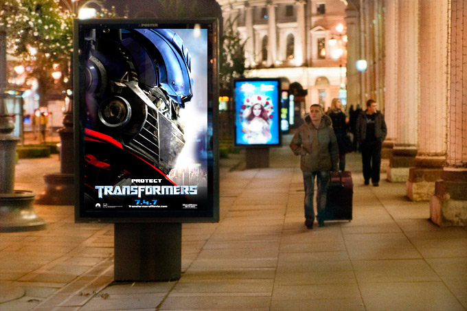

The problem
It happens often that we don't know what to watch tonight. We go and look for similar movies or genres or ask friends. We thought what if we give recommendation based on rates you give to movies you've already watched?
Inspired by a city
The idea of showing movies in a billlboard came to me when I walked along the streets. In Saint-Petersburg where I lived at the moment we had lot of billboards. Usually a typical one contains several posters and they appear one after another within several seconds. Such billboards have several advantages comparing to static ones:
- Showing more ads using the same space
- Increasing the amount of success to get your attention because you may wonder what is the next poster

Concept
In the concpet I placed a movie poster in a billboard in the way you see it on the streets. Indeed when you go to the next movie this poster goes down and new one appears like in the real billboard.